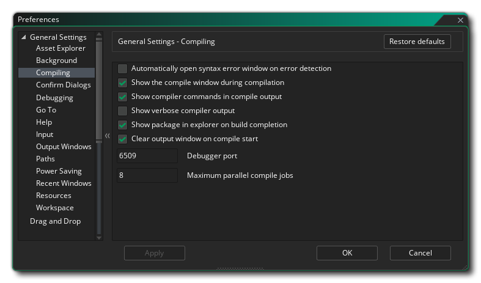
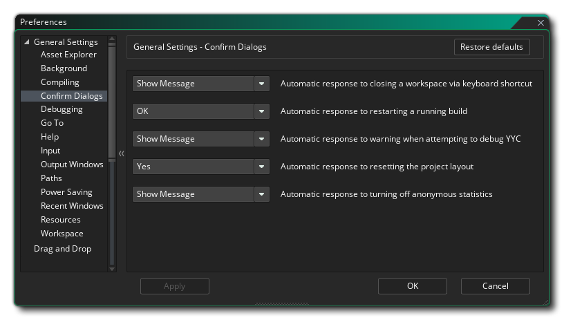

Las Preferencias generales se utilizan para definir el comportamiento general del IDE de GameMaker Studio 2. Los más generales se enumeran en la página principal, mientras que muchos otros se dividen en varias subcategorías, que se explican más adelante en esta página.
- Idioma IDE: esta opción le permite seleccionar el idioma para el IDE de la lista de opciones provistas. El valor predeterminado es inglés.
- Piel IDE: Aquí puede seleccionar entre las diferentes pieles que puede usar el IDE. Por defecto, GameMaker Studio 2 viene con dos máscaras, una clara y otra oscura, y la configuración inicial utiliza la máscara oscura.
- Dispositivo de audio predeterminado: aquí puede elegir el dispositivo de audio predeterminado para que lo use el IDE de GameMaker Studio 2. Puede actualizar la lista haciendo clic en el botón Actualizar
- Respuesta automática a la confirmación de salida: esta opción le permite establecer si se debe mostrar un mensaje de confirmación al salir de GameMaker Studio 2. De forma predeterminada, se establece en "Aceptar", pero se puede configurar para omitir el mensaje como si hubiera hecho clic en Aceptar.
- Habilitar notificaciones: al marcar esto se habilitará el IDE para mostrar notificaciones sobre nuevos tiempos de ejecución, etc. Esto está activado de forma predeterminada.
- Tiempo de espera de la notificación (ms): establece la duración (en milisegundos) durante la cual se muestra una notificación. El valor predeterminado es 6000.
- Cerrar sesión al salir: si esta opción está marcada, el IDE cerrará automáticamente la sesión del usuario cuando se cierre GameMaker Studio 2. Esto está dirigido principalmente a los usuarios de Educación, ya que, cuando se verifica, esto significa que cada vez que el programa se apaga, el usuario se desconecta y, por lo tanto, libera el asiento de la sesión para que otros usuarios la utilicen. Esto está desactivada por defecto.
- Recargar automáticamente los archivos modificados: si se marca esta opción, el IDE escaneará y revisará automáticamente los archivos para ver si alguno de ellos se ha cambiado fuera de GameMaker Studio 2 y los vuelve a cargar si lo tienen.
- Abrir nuevos recursos para editar en la creación: si está marcado, cada vez que cree un nuevo recurso en el Árbol de recursos, el editor de recursos correspondiente se abrirá automáticamente. Esto se marca de forma predeterminada y, al anular la verificación, tendrá que abrir manualmente todos los recursos recién creados.
- Abra nuevos recursos para editar y arrastrar archivos al IDE: ciertos recursos (como sprites o sonidos) se pueden arrastrar al área de trabajo principal en el IDE de GameMaker Studio 2 y se detectarán y agregarán como un nuevo recurso en el Árbol de recursos. De forma predeterminada, el editor de recursos correspondiente también se abrirá para su edición cuando esto suceda, pero al desmarcar esta opción evitará que se abran los editores y se le solicitará que los abra manualmente.
- Permitir que las pestañas vacías se cierren a través de un acceso directo: puede cerrar las pestañas abiertas con el método abreviado del teclado
 /
/  + W, pero si deshabilita esta opción, ese acceso directo ya no funcionará. Esto está habilitado por defecto.
+ W, pero si deshabilita esta opción, ese acceso directo ya no funcionará. Esto está habilitado por defecto. - Desactive las animaciones de transición IDE: El IDE de GameMaker Studio 2 tiene una serie de transiciones animadas para abrir ventanas, etc. Sin embargo, no son del gusto de todos y puede experimentar un aumento de rendimiento si se desactivan en máquinas más antiguas o con poca potencia si se desactivan. Puede deshabilitarlos aquí, y están activados de forma predeterminada.
- Mostrar pantalla de bienvenida al inicio: esta GameMaker Studio 2 forma predeterminada y simplemente le dice a GameMaker Studio 2 que muestre una breve pantalla de inicio cuando inicie el programa. Desmarcar esto evitará que se muestre la pantalla de inicio.
- Habilitar anulación de DPI: esta opción le permite anular la configuración predeterminada de DPI con la suya. Primero debe habilitar la opción y luego establecer el valor de Anulación de DPi sin formato (el valor predeterminado es 96) o establecer el Porcentaje del DPi nativo, y una vez que se le cambie, se le pedirá que reinicie el IDE, que puede requerir que guarde cualquier Se está trabajando en el proyecto actualmente abierto.
- Encuestarse a encuestas de comentarios: cuando esta opción está marcada, le está diciendo a GameMaker Studio 2 que desea participar en encuestas de comentarios, lo que significa que ocasionalmente, mientras trabaja, se mostrará un mensaje sobre el área en la que está trabajando y solicitar una calificación y realimentación. Esta opción está activada por defecto.
Las opciones anteriores son las principales opciones disponibles en las preferencias generales, pero hay una serie de opciones adicionales disponibles para usted en las subcategorías enumeradas a continuación:
Cuando vaya a agregar un objeto sprite a un objeto o cuando quiera usar una fuente en Arrastrar y soltar o en cualquier número de situaciones, se le presentará con el Explorador de activos:
Por defecto, muestra tanto una vista de árbol (a la izquierda) como una vista de lista (a la derecha), pero al usar esta preferencia, puede elegir que solo muestre una o la otra.
Las preferencias de fondo se ocupan del fondo del área de trabajo y de lo que se mostrará, así como de cómo se mostrará. Las opciones son:
- Imagen de fondo: Este es el archivo de imagen que se usará como fondo para las diferentes áreas de trabajo. Se suministra una imagen predeterminada y está habilitada de forma predeterminada, pero puede seleccionar su propia imagen aquí. Los tipos de imagen que puede seleccionar son *.png, *.gif, *.jpg, *.jpeg, *.tif, *.tiff, *.ico, *.bmp, *.2bp o *.mdi, pero tenga en cuenta que, independientemente del formato de imagen inicial, todos los archivos se guardarán para su uso como *.png archivos, tan animados *.gif los archivos, por ejemplo, solo se representarán como un solo marco inicial.
- Escalado de imagen: Esto controla cómo se escalará la imagen de fondo dentro de los diferentes espacios de trabajo. Las opciones son:
- Estirar: la imagen se estirará para adaptarse al espacio de trabajo, cambiando la escala según los muelles visibles
- Azulejo: la imagen se archivará para cubrir el área de trabajo
- Mejor ajuste: la imagen se escalará para ajustarse proporcionalmente al espacio de trabajo, con barras agregadas alrededor del borde si no es un ajuste 1: 1
- Estiramiento de escritorio: el fondo cubrirá todo el espacio de trabajo y se moverá en lugar de cambiar de escala cuando se abran / cierren los muelles
- Estirar pantalla: el fondo cubrirá un área del tamaño de la ventana y se recortará / ampliará para mostrar más o menos imágenes a medida que se abren / cierran los muelles.
- Mostrar imágenes de fondo en espacios de trabajo: esta opción controla si la imagen de fondo seleccionada debe mostrarse o no. Por defecto, esto está marcado como activado.
Las preferencias de compilación se ocupan de ciertas opciones relacionadas con la salida al compilar su juego para probar o crear un paquete, así como ciertas áreas del proceso de compilación. Las opciones son:
- Abrir automáticamente la ventana de error de sintaxis en la detección: habilite o inhabilite la notificación de error de sintaxis al compilar. Esto está desactivada por defecto.
- Mostrar la ventana de compilación durante la compilación: de forma predeterminada, la ventana de compilación se mostrará cuando compile sus proyectos, incluso si el documento de compilación está cerrado (se abrirá para la compilación). Al desmarcar esto se desactivará este comportamiento y la ventana de compilación estará visible si está abierta.
- Mostrar los comandos del compilador en la salida de compilación: Esto está marcado de forma predeterminada y obliga al compilador a mostrar todos los comandos relevantes en la ventana de compilación. Desmarcar esto hará que la salida sea más pequeña y tenga menos información.
- Mostrar salida detallada del compilador: al marcar esto, se forzará al compilador a mostrar comandos adicionales relacionados con el proceso de compilación. En general, esto solo es necesario para la depuración y el soporte puede solicitarlo si tiene un problema. Está desactivado de forma predeterminada (y esta es la configuración recomendada).
- Mostrar el paquete en el explorador cuando finalice la compilación: al marcar esto, GameMaker Studio 2 abrirá la ventana del explorador del sistema operativo en la ubicación donde se creó el paquete ejecutable final. Está activado de forma predeterminada.
- Borrar la ventana de salida al inicio de la compilación: de forma predeterminada, la ventana del compilador borrará todos los mensajes anteriores de la ventana de salida de la compilación al inicio de cada compilación, sin embargo, al desmarcar esto se mantendrán los registros del compilador anteriores. Esto está activado de forma predeterminada y es la configuración recomendada ya que los registros de compiladores grandes pueden ralentizar los tiempos de compilación.
- Puerto del depurador: establece el número de puerto para que lo utilice el módulo de depuración. El valor predeterminado es 6509.
- Trabajos de compilación paralelos máximos: este valor establece el número máximo de núcleos de CPU para dedicar a compilar un proyecto. El valor predeterminado es 8 y, en general, no debería tener que cambiar esto, pero si se encuentra en una computadora portátil o en una máquina de gama más baja, es posible que desee reducir este valor. El valor predeterminado se establece en 8.
Las preferencias de Confirmar diálogo se ocupan de algunas de las ventanas emergentes de confirmación general que aparecerán al realizar ciertas acciones en el IDE de GameMaker Studio 2. Las opciones son:
- Respuesta automática para cerrar un área de trabajo mediante un método abreviado de teclado: el método abreviado de teclado mencionado anteriormente se puede usar para cerrar cualquier pestaña abierta, pero a veces puede cerrar accidentalmente una pestaña vacía que necesite. Para evitar esto, puede configurar esta opción en "Mostrar mensaje" (la opción predeterminada) para preguntar si realmente desea cerrar esa pestaña vacía. Las otras configuraciones son "No", para simplemente no hacer nada si se utiliza el acceso directo, o "Aceptar" para cerrar la pestaña sin ningún mensaje.
- Respuesta automática al reinicio de una compilación en ejecución: cuando reinicia una compilación y todavía se está ejecutando otra anterior, se le preguntará si desea detener primero la compilación actual. Desmarcar este mensaje suprimirá ese mensaje y forzará a GameMaker Studio 2 a asumir que ha hecho clic en "Aceptar" como respuesta. Esta opción está configurada en "Mostrar mensaje" de forma predeterminada.
- Respuesta automática a la advertencia cuando se intenta depurar YYC: el destino YYC se compila en código nativo y, como tal, no se puede depurar utilizando el depurador incorporado. Cuando intente utilizar el depurador en el destino YYC, recibirá una advertencia informándole de esto, y el hecho de que el proyecto se compilará utilizando la máquina virtual. Esta opción está configurada en "Mostrar mensaje" de forma predeterminada, pero si la configura en "Aceptar", se suprimirá esta advertencia.
- Respuesta automática para restablecer el diseño del proyecto: cuando seleccione restablecer el diseño del proyecto (desde el menú Diseños ), se mostrará un mensaje de advertencia de forma predeterminada sobre cómo esto cerrará las ventanas de recursos abiertas. Sin embargo, puede suprimir este mensaje y restablecer automáticamente el diseño seleccionando "Aceptar", o hacer que no haga nada seleccionando "No". El valor predeterminado es tener "Mostrar mensaje".
- Respuesta automática para desactivar las estadísticas anónimas: cuando desactivas las estadísticas anónimas del juego en las opciones generales del juego, se te mostrará un mensaje de advertencia que te pedirá que consideres la opción con cuidado. Puede suprimir este mensaje seleccionando "Aceptar" aquí, o hacer que no haga nada seleccionando "No". El valor predeterminado es tener "Mostrar mensaje".
Las preferencias aquí están relacionadas con el depurador de GameMaker Studio 2 y tiene las siguientes opciones:
- Respuesta automática al cierre del depurador: esta opción le permite configurar la respuesta automática al cerrar el depurador. Si se configura en "Mostrar mensaje", se le mostrará el diálogo cuando desee cerrar el depurador, mientras que al configurarlo en "Sí" o "No" no se mostrará este diálogo y no se realizará la tarea como se indica.
- Habilitar la depuración en tiempo real: Marcar esta opción le permitirá depurar sus proyectos de juegos en tiempo real a medida que los ejecuta desde el IDE. Esto está marcado de forma predeterminada.
Las preferencias aquí son para la ventana Ir a, que puede abrir usando el atajo de teclado
- Número máximo de resultados de búsqueda para mostrar: Esta opción controla el número máximo de resultados devueltos cuando utiliza la ventana de búsqueda Ir a.
El archivo de ayuda está diseñado para funcionar como una página web y, como tal, requiere el uso del servidor micro web GameMaker Studio 2 o el uso de un navegador externo. Estas configuraciones se pueden cambiar aquí:
- Puerto manual de ayuda: esto establece el número de puerto que debe usar el servidor web micro manual. El valor predeterminado es 51291.
- Use un navegador externo para obtener ayuda: si se marca esta opción, al abrir el archivo de ayuda se abrirá usando el navegador predeterminado para su sistema. Esto está activado de forma predeterminada, y desactivarlo forzará la apertura del archivo de ayuda en el área de trabajo dentro del IDE.
Las preferencias de entrada controlan ciertos aspectos de la entrada del mouse y del teclado dentro del IDE. Las opciones disponibles son:
- Tiempo de doble clic lento (ms): algunas áreas del IDE requieren un doble clic más lento para funcionar correctamente, por ejemplo, al cambiar el nombre de un recurso (un doble clic rápido abrirá el editor de recursos, mientras que un doble clic lento le permitirá cambiar el nombre) ). Esta opción le permite configurar la velocidad de detección, con un valor predeterminado de 500 ms.
- Tiempo de bloqueo de desplazamiento (ms): esta opción tiene que ver con el tiempo que GameMaker Studio 2 debe esperar entre las ventanas de desplazamiento que se superponen. Esencialmente, cuando se desplaza en la ventana "A", el cursor puede desplazarse sobre otra área desplazable en la ventana "B", por lo que esta preferencia define cuánto tiempo tiene que esperar después de detener el desplazamiento "A" antes de poder desplazarse " B ", por lo que no comienzas accidentalmente a desplazar paneles diferentes. El valor predeterminado es 500ms.
- Velocidad de desplazamiento: controla la velocidad de desplazamiento dentro de los diferentes espacios de trabajo. El valor predeterminado es 1.
- Distancia de arrastre de la pestaña para des-maximizar el escritorio (px): cuando arrastra una pestaña del espacio de trabajo fuera de su posición predeterminada dentro del IDE, si solo hay un espacio de trabajo activo en ese momento, entonces la ventana de GameMaker Studio 2 no se maximizará y se moverá con el mouse (si tiene más de un espacio de trabajo activo, se creará una nueva instancia del IDE para contener el espacio de trabajo). Esta configuración controla qué tan lejos tiene que arrastrar la pestaña antes de que el área de trabajo la reconozca, y el valor predeterminado es 50px.
- Nivel mínimo de zoom para interactuar con el contenido de la ventana (%): esta opción controla el punto de corte del zoom en el que el mouse ya no podrá interactuar con las ventanas del área de trabajo (es decir, agregar nodos, arrastrar ventanas, etc.). El valor predeterminado es 40.
- El zoom de la rueda del mouse requiere la tecla Ctrl: cuando se marca esta opción, todos los editores (y el área de trabajo principal) tendrán habilitado el zoom con
, mientras que al desmarcarlo se habilitará el zoom solo con la rueda del mouse
Las preferencias de la ventana de salida controlan los diferentes colores y opciones de formato para las diferentes ventanas de salida en el IDE. Cada una de las diferentes ventanas tiene el mismo conjunto de opciones, que se enumeran a continuación:
- Color: el color predeterminado para el texto que se escribe en la ventana.
- Nombre de la fuente: el nombre de la fuente a usar (las fuentes disponibles dependerán de las instaladas en su sistema).
- Estilo: el estilo de fuente a usar, como negrita o cursiva (tenga en cuenta que no todas las ventanas permitirán los mismos estilos y también dependerá de la fuente utilizada).
- Tamaño: el tamaño para establecer la fuente para la ventana de salida dada.
- Anti-Aliasing: aquí puede establecer el modo de anti-aliasing para la representación de la fuente de las ventanas de salida. Puede elegir dejar que el IDE decida seleccionando Usar predeterminado, o puede forzarlo a Activar o Desactivar seleccionando cualquiera de esas opciones.
Las preferencias de ruta controlan las diferentes rutas de archivo requeridas por los elementos en el IDE de GameMaker Studio 2, así como para cualquier editor externo que necesite. Las siguientes opciones existen para el IDE:
- Directorio temporal: la ubicación para guardar todas las carpetas temporales. Por defecto esto es \Users\<Username>\AppData\Local\Temp\GameMakerStudio2.
- Directorio de caché IDE: la ubicación para guardar el caché IDE. Por defecto esto es \Users\<Username>\AppData\Roaming\GameMakerStudio2-Dev\Cache.
- Directorio de caché de activos: la ubicación para guardar el caché de activos para cada proyecto. Por defecto esto es \Users\<Username>\AppData\Roaming\GameMakerStudio2-Dev\Cache.
- Ubicación de "Mis proyectos": la ubicación donde GameMaker Studio 2 creará inicialmente nuevos proyectos. Por defecto esto es \Users\<Username>\Documents\GameMakerStudio2.
- Eliminar automáticamente el directorio temporal al cerrar: al marcar esto forzará a GameMaker Studio 2 a eliminar automáticamente la carpeta Temp que crea por proyecto para compilar, etc. Esta configuración está activada de forma predeterminada, y si la desactiva, la desactivará (lo que significa que tendrás que eliminar manualmente los archivos temporales más tarde).
- Eliminar automáticamente la memoria caché de activos al cerrar: si se marca esta opción, la carpeta de la memoria caché del compilador de activos se eliminará cuando salga de GameMaker Studio 2. Esto está desactivado de forma predeterminada, y habilitarlo significará que cada vez que cargue y ejecute cualquier proyecto, la memoria caché deberá ser reconstruida (lo que puede llevar tiempo dependiendo del tamaño del juego).
- Eliminar automáticamente la memoria caché IDE al cerrar: si se marca esta opción, la carpeta de memoria caché del compilador IDE se eliminará cuando salga de GameMaker Studio 2. Esto está desactivado de forma predeterminada, y habilitarlo significará que cada vez que inicie GameMaker Studio 2, la memoria caché deberá ser reconstruida.
- Eliminar carpeta temporal: Al hacer clic en este botón, se eliminará la carpeta temporal del proyecto.
- Eliminar caché de activos: al hacer clic en este botón se eliminará la caché de activos del compilador para el proyecto.
- Eliminar IDE Caché: Al hacer clic en este botón se eliminará la memoria caché IDE.
Existen las siguientes opciones para configurar rutas a editores externos:
- Ruta al editor / visor externo para archivos SWF: si está trabajando con sprites de formato SWF, puede configurar esto en la ruta de su editor / visor preferido y al hacer clic en el botón Editar imagen en el Editor de Sprite, se abrirá el programa. El valor predeterminado aquí es no tener ruta.
- Ruta al editor / visor externo para archivos Spine: si está trabajando con sprites de formato Spine, puede configurar esto en la ruta de su editor / visor preferido y al hacer clic en el botón Editar imagen en el Editor de Sprite, se abrirá el programa. El valor predeterminado aquí es no tener ruta.
Las preferencias de Ahorro de energía aquí afectarán la cantidad de potencia de CPU y GPU que se utilizará para generar el IDE de GameMaker Studio 2 (esencialmente, esto reducirá la tasa de cuadros de la base a la que se ejecuta el programa y, por lo tanto, disminuirá el consumo de energía). Tenga en cuenta que algunos de estos son específicos del proceso en segundo plano de File Watcher. El Observador de archivos escanea las carpetas del proyecto en busca de cambios externos, por ejemplo, si cambia un script gml en Notepad ++, el observador de archivos detectará este cambio y le preguntará si desea volver a cargarlo o descartarlo, y como tal, la frecuencia con la que se realiza este escaneo. Sucede que puede afectar gravemente el rendimiento y el consumo de energía.
Las opciones aquí son:
- Régimen de cuadros de la potencia de CA (%): el modificador de la tasa de cuadros IDE base cuando se conecta a una entrada de alimentación. El valor predeterminado es 100%.
- Velocidad de la velocidad de la batería (%): el modificador base de la velocidad de la imagen IDE cuando se usa la batería para alimentar la máquina. El valor predeterminado es 35%.
- Velocidad de cuadros de fondo (%): el modificador de la velocidad de cuadros IDE base cuando GameMaker Studio 2 no está enfocado (independientemente de la fuente de alimentación). El valor predeterminado es 15%.
- Frecuencia del observador de archivos (ms): esta es la frecuencia con la que se ejecutará el observador de archivos cuando esté en el escritorio (o en una computadora portátil acoplada). El valor predeterminado es 2000.
- Frecuencia del observador de archivos de la computadora portátil (ms): esta es la frecuencia con la que se ejecutará el observador de archivos en el modo de computadora portátil. El valor predeterminado es 5000.
Las preferencias aquí contienen opciones sobre cómo la lista de Windows recientes mostrará los elementos:
- Abrir automáticamente en la carga del proyecto: cuando está habilitada, la lista de Windows recientes se mostrará cuando cargue un nuevo proyecto. El valor predeterminado es deshabilitado.
- Mover las ventanas enfocadas a la parte superior: cuando esto esté habilitado y haga clic en cualquier elemento de la lista de Ventana reciente, el elemento seleccionado se moverá a la parte superior de la lista. Por defecto, esto está desactivado.
- Mostrar solo las ventanas abiertas actualmente: habilitar esto hará que la lista de Windows recientes elimine los elementos que ya no están abiertos en un área de trabajo (es decir, al cerrar cualquier ventana también se eliminará de la lista). Por defecto, esto está desactivado.
- Ventanas máximas para mostrar: esto establece el número máximo de ventanas abiertas previamente que se mostrarán dentro de la lista de Ventanas recientes. El valor predeterminado es 10.
Las preferencias aquí contienen opciones sobre cómo se dibujarán ciertos recursos en sus proyectos:
- Color de dibujo predeterminado inicial para nuevos proyectos: cuando usa una fuente o dibuja una forma usando las funciones de GameMaker Studio 2 o las acciones DnD™ sin especificar un color, el color establecido aquí es el que se usará. El color predeterminado es negro ( $00000000 ).
Las preferencias aquí afectarán la forma en que se mueve dentro de los diferentes espacios GameMaker Studio 2 trabajo de GameMaker Studio 2. Las opciones son:
- Rango de grado de navegación del teclado del área de trabajo: dentro de un área de trabajo puede tener varias ventanas abiertas para diferentes objetos y recursos, y para moverse rápidamente entre ellas puede usar el método abreviado de teclado
+ <Arrow Keys> moverse entre ellos. Dado que las ventanas dentro de un área de trabajo no están alineadas en la cuadrícula, el IDE tiene que elegir a qué ventana se refiere cuando presiona cualquiera de las 8 direcciones posibles, y esta opción le permite establecer el "ángulo de aspecto" que se usa. El valor predeterminado es 40 °.
- Relleno de la columna de la cadena del área de trabajo (px): los elementos del área de trabajo a menudo están "encadenados" entre sí (por ejemplo, el Editor de código está encadenado al Editor de eventos está encadenado al Editor de objetos), y esta opción le permite establecer la distancia horizontal entre Cualquiera de las dos ventanas encadenadas. El valor predeterminado es 30px.
- Relleno de la fila de la cadena del área de trabajo (px): Como se mencionó anteriormente, los elementos del área de trabajo a menudo están "encadenados" entre sí y esta opción le permite establecer la distancia vertical entre dos ventanas encadenadas. El valor predeterminado es 20px.
- Recuento de segmentos de representación de la cadena de trabajo: aquí puede establecer el número máximo de segmentos para las cadenas de representación. Reducir este valor puede ayudar al rendimiento en máquinas de gama baja. El valor predeterminado es 20.
- Color del enlace de la cadena del área de trabajo: este es el color que se usará para mostrar las cadenas entre los elementos del área de trabajo. El color predeterminado es $99DD00 con un alfa de 153 ( $99 ).
- La navegación del teclado del área de trabajo restablece el zoom: como se mencionó anteriormente, puede saltar de una ventana a otra dentro del área de trabajo usando los atajos de teclado. También puede acercar y alejar el área de trabajo usando la
. Establecer esta opción significará que si tiene el área de trabajo ampliada y usa los accesos directos para saltar a otra ventana, entonces el área de trabajo regresará a una vista 1: 1 y se centrará en la ventana seleccionada. Esta opción está apagada por defecto.
- Las cadenas de espacios de trabajo pueden superponerse: cuando esta opción esté habilitada permitirá que las cadenas de espacios de trabajo se crucen y se superpongan. Esto está desactivada por defecto.